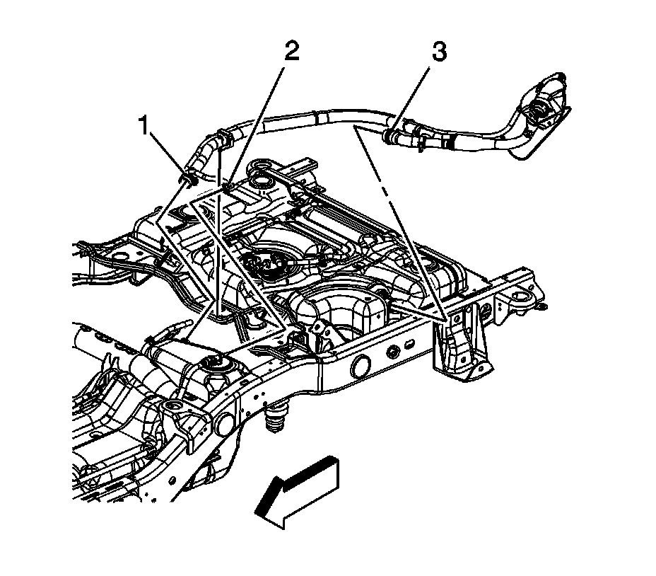

Fuel Tank Draining (Dual Tanks - Rear)
FUEL TANK DRAINING(DUAL TANKS - REAR)
TOOLS REQUIRED
J 45004 Fuel Tank Siphon Hose
CAUTION: Refer to Gasoline/Gasoline Vapors Caution.

1. Remove the fuel fill cap.
2. Remove the fuel tank filler housing to body TORX(R) screws (1) and retainer (2).
3. Remove the fuel tank filler housing to fuel tank fill pipe screws.
4. Remove the filler housing.

5. Raise and support the vehicle. Refer to Vehicle Lifting.
6. Loosen the fill hose clamp (3) at the rear tank.
7. Remove the fill hose from the rear tank.
8. Insert the siphon hose from the J 45004 into the fuel tank.
9. Attach the siphon hose from the J 45004 to the pump devise.
10. Using a hand or air operated pump device, drain as much fuel from the tank as possible.